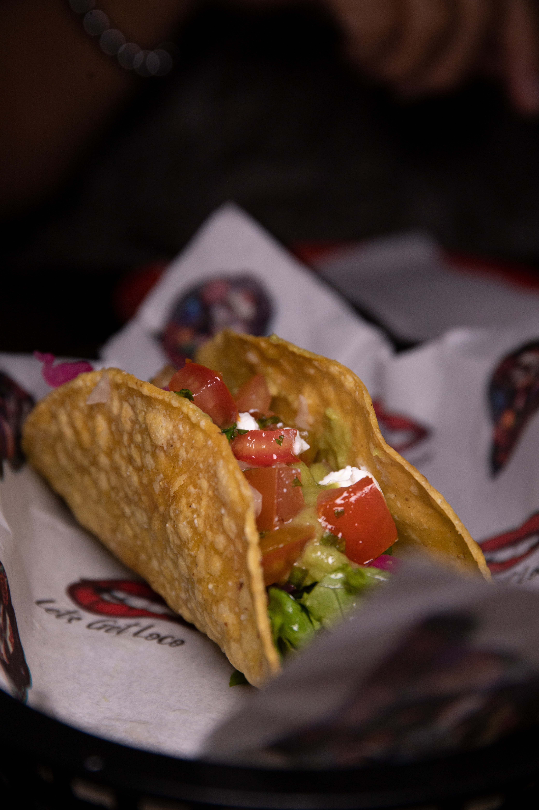
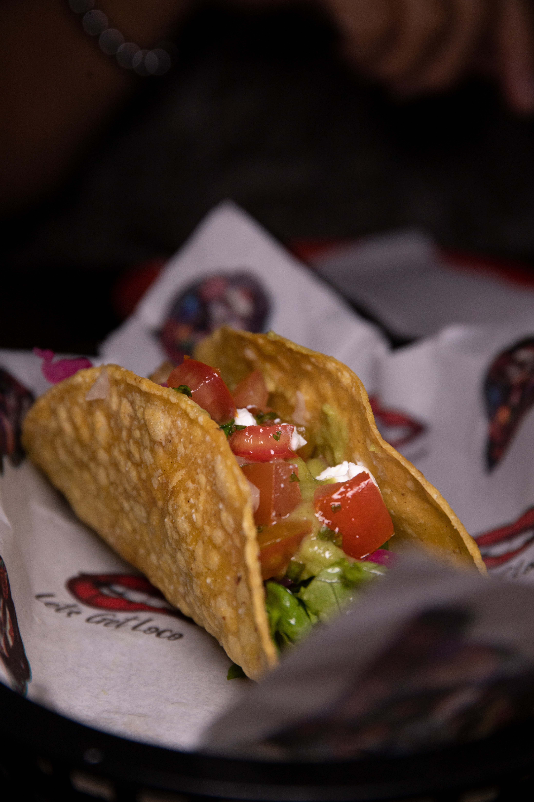
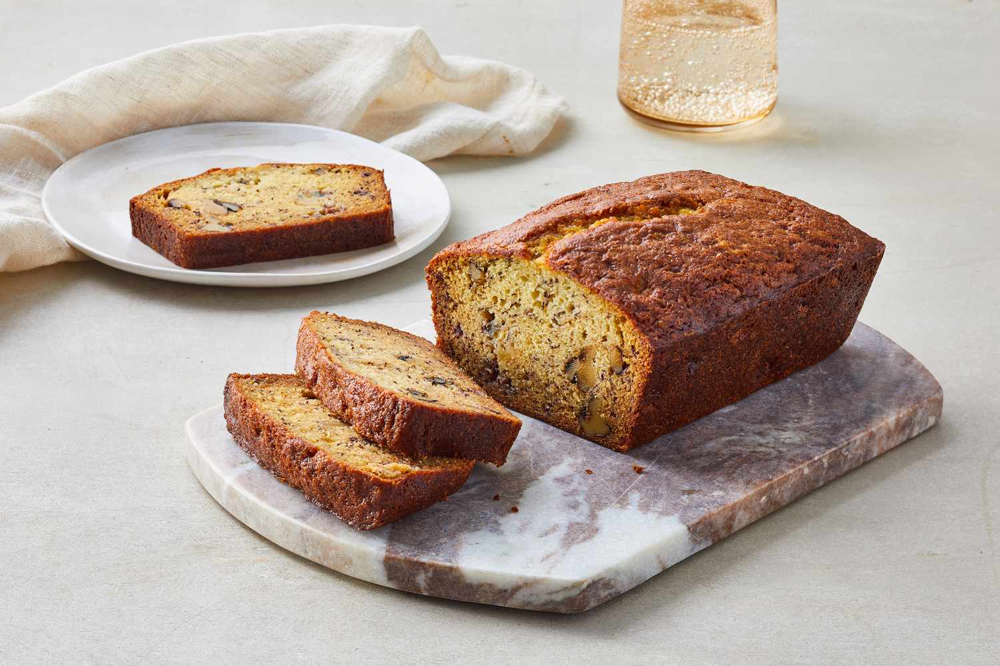
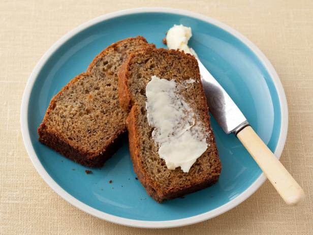
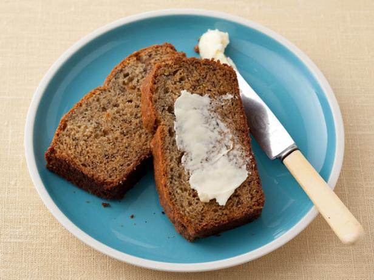

Swedish Pancakes
Origin: Sweden Source: Kristi Category: Breakfast
Swedish pancakes (Pannkaka [singular] or Pannkakor [plural] in Swedish) are one of the most well-known Scandinavian delicacies, and rightfully so. Tender, buttery and often served with butter and lingonberry jam, there is much to account for their popularity.
Recipe Ingredients
- Butter
- Sugar
- Eggs
- Vanilla
- Milk
- Water
- Salt
- Flour
Recipe Steps
- Combine all ingredients in a blender and blend until completely smooth.Transfer to the refrigerator to rest for at least 2 hours or up to 2 days.
- Preheat the oven to 200 degrees if you plan to eat the pannkakor right away.
- Heat a 10 inch nonstick skillet over medium heat.
- Stir the batter briefly to recombine.
- Brush skillet with melted butter.
- Pick the skillet up off of the burner and quickly add ¼ cup of batter.
- Immediately begin swirling the batter around the skillet so that it coats the bottom of the pan.
- Continue swirling until the batter is just set.
- Return skillet to the burner. Cook until the pancake is golden brown in spots on the bottom, about 30 seconds.
- Use a thin spatula to loosen the pancake, flip it over continue to cook on the other side for about 30 seconds.
- Transfer to a plate. Cover with foil and transfer to oven to keep warm and repeat with remaining batter, wiping out skillet in between pancakes with paper towel as needed.
- Serve with lingonberry jam and butter (see note below) or other desired toppings and/or fillings.
Additional Food images

Zucchini Fritters
Origin: Unknown Source: niftyrecipe.com Category: Side dish/main dish
I found this recipe for zucchini fritters on a food blog when I was looking for quick and easy dishes to make during undergrad. It uses minimal ingredients and can be done in less than half an hour. They’re delicious and filling and go great with dipping sauces.
Recipe Ingredients
- Zucchini
- Egg
- Flour
- Vegetable/seed oil
- Garlic
- Salt and pepper
Recipe Steps
- Combine eggs, salt, and pepper and whisk
- Add pressed garlic
- Grate the zucchini and squeeze the moisture out of it
- Add zucchini and flour and mix
- Heat oil in pan and add dollops of batter
- Serve with or without dipping sauce
Additional Food images


Guacamole
Origin: Mexican Source: Yiran's recipe Category: Appetizer
Guacamole is a Mexican dip made from mashed avocados, tomatoes, onions, cilantro, lime juice, and chili pepper, creating a creamy, zesty, and versatile condiment often enjoyed with tortilla chips, tacos, and more.
Recipe Ingredients
- Avocado
- Lime
- Salt
- Onion
- Tomato
- Cilantro
Recipe Steps
- Slice three ripe avocados in half
- Scoop them into a mixing bowl
- Use a fork to gently mash them
- Add the onions, tomatoes, cilantro, jalapeno pepper, garlic, lime juice and salt and stir everything together.
Additional Food images
 


Kunefe
Origin: Palestine Source: Ana Sortun Category: AppetizerKunefe, also spelled "knafeh" or "künefe," is a popular and traditional Middle Eastern dessert. It is particularly well-known in countries like Turkey, Lebanon, Syria, Palestine, Jordan, and Greece, among others.
Recipe Ingredients
- Phyllo Dough
- Butter
- Milk
- Buffalo Mozzarella
- Ricotta Cheese
- Pistachios
- Confectioners' Sugar
- Fresh Nutmeg
- Water
- Sugar
- lemon Juice
- Rose Water
Recipe Steps
- Preheat oven to 375ºF
- Place kadafi in a food processor and chop up finely.
- Add butter and milk and line a 8 inch square heavy baking dish with half of this mixture.
- Mix the cheeses with the pistachios, sugar& nutmeg and spread onto shredded filo.
- Top with the remaining shredded pastry.
- Bake for 45 minutes.
- Make a sugar syrup by boiling water with sugar and lemon juice.
- Cook until reduced by a third and it becomes nice and thick.
- Stir in rose water to taste.
- When kunefe comes out of the oven, ladle 2/3 of the hot syrup over it and save the rest to pass while eating.
- Serve hot.
Additional Food images

Best Banana Bread
Origin: United States Source: Ikadlec from food.com Category: Dessert Banana bread is a moist, sweet, and cake-like bread made primarily from ripe bananas. It's a popular baked treat, especially in many Western countries, and is often enjoyed as a snack or dessert.
Recipe Ingredients
- Butter
- Granulated Sugar
- Eggs
- Bananas
- All-purpose Flour
- Baking Soda
- Salt
- Vanilla
Recipe Steps
- Remove odd pots and pans from oven.
- Preheat oven to 350º / 180º.
- Cream together butter and sugar.
- Add eggs and crushed bananas.
- Combine well.
- Sift together flour, soda and salt. Add to creamed mixture. Add vanilla.
- Mix just until combined. Do not overmix.
- Pour into greased and floured loaf pan.
- Bake at 350º / 180º for 55 minutes.
- Keeps well, refrigerated.
Additional Food images
 
